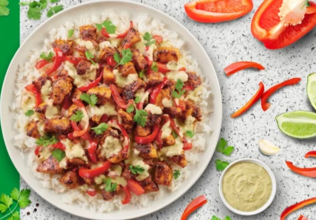

Salsa Verde Chicken

Description:
This recipe will make any night a fiesta night. All you need is a few ingredients to make this delicious dish.
Ingredients:
- Chicken Breast
- 1 cup uncooked rice
- 1 Garlic clove
- 4 oz Canned salsa verde
- Magic Fajita Seasoning
- 1/2 yellow onion
- 1 red bell pepper
- Cilantro
- Olive Oil
Steps:
- Season Chicken with Magic Fajita Seasoning
- Cook rice to packaged directions
- Chop onion, bell pepper and garlic and cook in heated skillet with olive oil.
- Preheat grill. Once grill is hot cook chicken for 5 to 6 minutes on each side.
- Once onion and bell pepper are soft add cooked rice and salsa verde and mix until coated.
- Plate the rice mixture..
- Cut chicken and place ontop of rice mixture.
- Add cilantro if desired and enjoy.